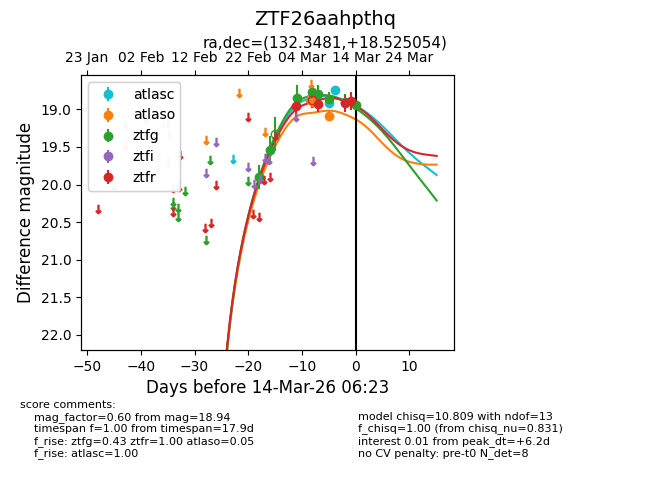
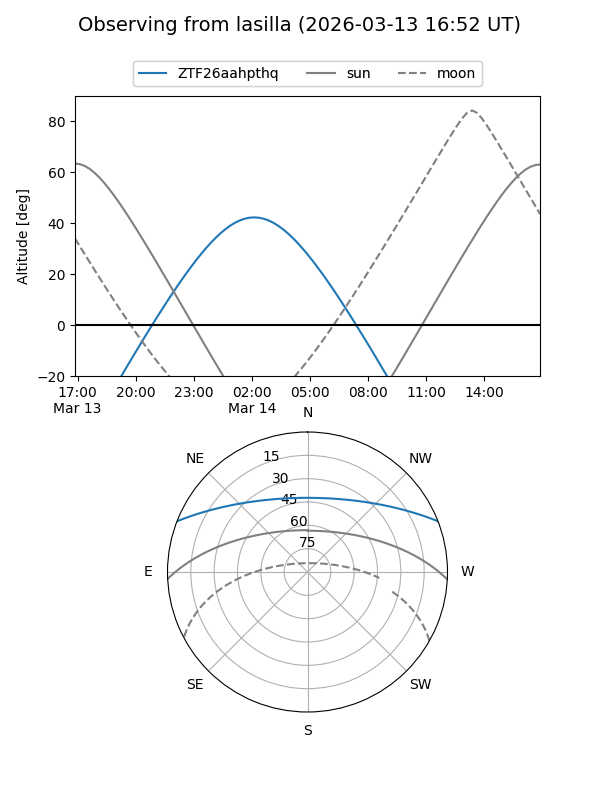
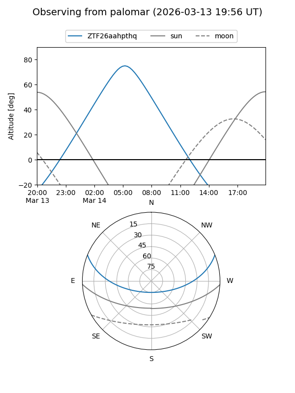
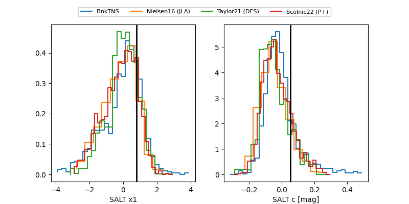

ZTF26aahpthq
Target ZTF26aahpthq at 2026-03-14 06:25
Aliases and brokers:
FINK: link
Lasair: link
ALeRCE: link
alt names
ZTF26aahpthq (ztf,fink_ztf)
Coordinates:
equatorial (ra, dec) = 132.3481,+18.52505
equatorial (HMS+DMS) = 08:49:23.56,+18:31:30.20
galactic (l, b) = (208.0884,+34.07465)
Flags:
Photometry:
last atlasc=18.74, atlaso=19.08, ztfg=18.94, ztfr=18.89
2 atlasc, 2 atlaso, 8 ztfg, 4 ztfr detections
Lightcurve

Visibility


Additional plots
